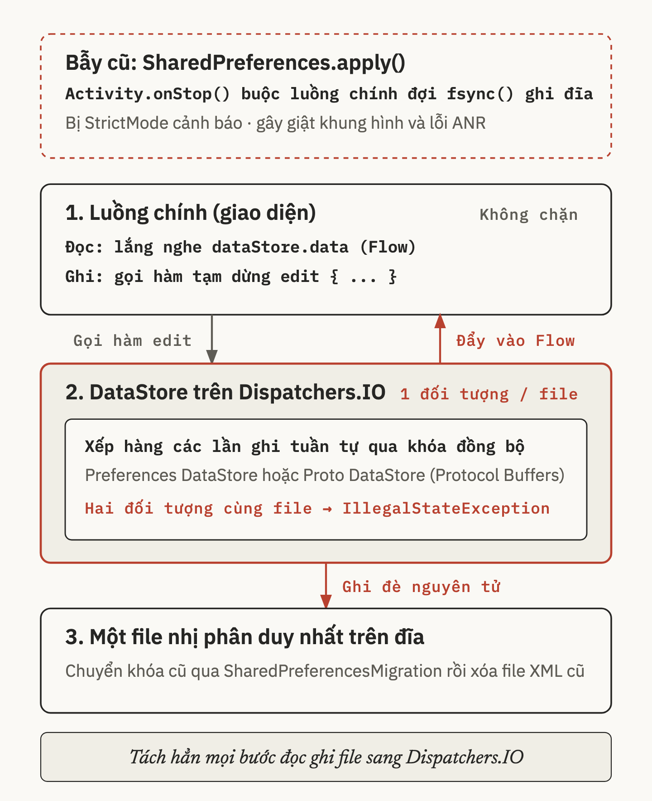

DataStore
Bản 30 giây
Khi lưu cờ đăng nhập hay chế độ tối bằng SharedPreferences, lệnh đọc ghi dễ chặn đứng luồng vẽ giao diện gây đơ máy. DataStore thay thế bằng cách chuyển mọi thao tác đọc ghi file sang luồng nền và trả dữ liệu qua luồng bất đồng bộ. Nhờ vậy, ứng dụng đọc cài đặt mượt mà, không bao giờ làm treo màn hình của người dùng.
Cần biết trước
Vấn đề buộc nó ra đời
Từ Android 1.0, SharedPreferences là công cụ mặc định để lưu các cặp khóa - giá trị nhỏ trong file XML. Tuy nhiên, hàm đọc như getString() lại chạy đồng bộ. Nếu file chưa kịp nạp lên RAM, luồng chính phải đứng chờ ổ cứng đọc xong.
Nhiều người tưởng gọi apply() là thoát khỏi việc chặn luồng chính vì nó ghi đĩa ở luồng nền. Thực tế, khi Activity đóng ở onStop(), hệ thống buộc luồng chính phải đứng đợi lệnh fsync() ghi hết các bản apply() xuống đĩa. Trên máy có bộ nhớ flash chậm, bước đợi này gây giật khung hình, bị StrictMode cảnh báo và dẫn tới lỗi ANR.
Tháng 8/2021, Google phát hành DataStore 1.0.0 với hai nhánh là Preferences DataStore và Proto DataStore. Thư viện này bỏ hẳn các hàm đọc ghi đồng bộ, ép mọi thao tác đi qua Flow và hàm tạm dừng trên luồng nền.
Nó thực sự là cái gì
DataStore không phải là một cơ sở dữ liệu quan hệ thu nhỏ dùng để truy vấn hay lọc danh sách hàng nghìn dòng. Thực chất, nó là một trình quản lý một file nhị phân duy nhất trên đĩa, vận hành hoàn toàn trên Dispatchers.IO. Mỗi lần bạn sửa một khóa, DataStore tạo ra một bản chụp trạng thái mới và ghi đè nguyên tử toàn bộ file đó.
Cơ chế

Khi bạn đọc dataStore.data, thư viện trả về một Flow đọc file trên Dispatchers.IO và giữ bản sao trong bộ nhớ đệm. Khi gọi hàm edit, DataStore dùng khóa đồng bộ nội bộ xếp hàng các lần ghi tuần tự, rồi truyền bản sao vào khối lệnh. Khối edit chạy xong, bản trạng thái mới được ghi ra file nhị phân trên đĩa và đẩy vào Flow cho màn hình đang nghe. Với Proto DataStore, cấu trúc file được định nghĩa chặt bằng Protocol Buffers thay vì cặp khóa rời rạc.
Đánh đổi
Bạn loại bỏ hoàn toàn nguy cơ lỗi ANR do fsync() của SharedPreferences. Bạn cũng có giao dịch nguyên tử và bắt được lỗi đọc đĩa qua catch. Đổi lại, bạn không thể lấy ngay giá trị bằng hàm đồng bộ thường mà phải đọc trong coroutine. Nó cũng không hỗ trợ truy vấn từng phần.
Nguyên lý gốc
Không bao giờ chạm vào ổ cứng trên luồng vẽ giao diện. Mọi thay đổi trạng thái phải diễn ra nguyên tử qua một đầu mối duy nhất.
Key insight
SharedPreferences.apply()vẫn chặn luồng chính lúc đóng màn hình để đợi ghi đĩa, cònDataStoretách hẳn mọi bước đọc ghi sangDispatchers.IO.
Khuôn mẫu chuẩn
val Context.settingsStore by preferencesDataStore(name = "settings")
val DARK_MODE = booleanPreferencesKey("dark_mode")
val isDarkFlow: Flow<Boolean> = context.settingsStore.data
.map { prefs -> prefs[DARK_MODE] ?: false }
suspend fun setDarkMode(context: Context, enabled: Boolean) {
context.settingsStore.edit { prefs -> prefs[DARK_MODE] = enabled }
}
Bẫy & ranh giới
Trong một tiến trình, bạn chỉ được phép tạo đúng một đối tượng DataStore cho mỗi tên file trên đĩa. Nếu khởi tạo DataStore trong hàm dựng làm sinh hai đối tượng cùng trỏ vào một file, ứng dụng sẽ sập ngay với lỗi IllegalStateException. Tuyệt đối không bọc runBlocking trên luồng chính để ép đọc dataStore.data.first(), vì làm vậy là tự đem họa chặn giao diện quay lại. Khi dữ liệu là danh sách lớn hoặc cần tìm kiếm theo điều kiện, hãy dùng Room thay vì nhồi vào DataStore.
Câu hỏi thực chiến
Hỏi: Vì sao dùng SharedPreferences.apply() là ghi bất đồng bộ rồi mà trên Google Play Console vẫn báo lỗi ANR ở Activity.onStop()?
Vì apply() chỉ đưa việc ghi vào hàng đợi nền. Khi chuyển màn hình, hàm onStop() buộc phải chờ hàng đợi đó ghi xong xuống đĩa (fsync()). Nếu lúc đó chip nhớ đang bận, luồng chính bị khóa cứng quá 5 giây và sinh lỗi ANR.
Hỏi: Khi nào nên chọn Proto DataStore thay cho Preferences DataStore?
Chọn Preferences DataStore khi bạn chỉ lưu vài cặp cài đặt đơn giản như cờ bật tắt thông báo hay mã ngôn ngữ. Khi lưu đối tượng cấu hình nhiều trường và muốn trình biên dịch kiểm tra chặt kiểu dữ liệu, bạn hãy dùng Proto DataStore.
Hỏi: Làm sao giữ lại dữ liệu cài đặt cũ của người dùng khi nâng cấp app từ SharedPreferences lên DataStore?
Lúc khai báo preferencesDataStore, bạn truyền thêm SharedPreferencesMigration(context, "ten_file_cu") vào tham số produceMigrations. Trong lần đọc hoặc ghi đầu tiên, DataStore sẽ tự chép toàn bộ khóa cũ sang file mới rồi xóa file XML cũ.
Hỏi: Lưu danh sách 500 món hàng trong giỏ hàng vào DataStore dưới dạng chuỗi JSON có tốt không?
Không nên. Mỗi lần sửa số lượng 1 món hàng, DataStore đều phải đọc, giải mã và ghi đè toàn bộ file 500 món đó. Với dữ liệu có nhiều dòng cần sửa từng phần, bạn bắt buộc phải dùng cơ sở dữ liệu Room.
Ý bắt buộc khi giải thích lại
- Giải thích được vì sao hàm apply() của SharedPreferences vẫn gây ANR trên luồng chính khi chờ fsync() ở onStop().
- Trình bày được cơ chế DataStore đọc dữ liệu qua Flow và ghi tuần tự nguyên tử qua hàm suspend edit trên Dispatchers.IO.
- Nêu được quy tắc chỉ một đối tượng DataStore cho mỗi file (vi phạm gây IllegalStateException), bẫy dùng runBlocking trên luồng chính và ranh giới với Room.
- Viết lại được khuôn mẫu chuẩn từ trí nhớ.
Nguồn
- App Architecture: Data Layer - DataStore — Android Developers
- DataStore release notes — Android Developers
- StrictMode API reference — Android Developers